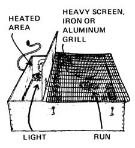
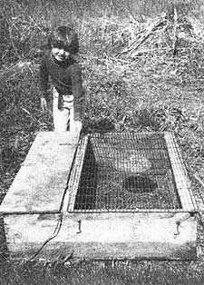

Right now-while the ground is covered with ice and snow?is the time to hie down to the workshop and whip out one of these simple little outdoor brooders. Then, when you're ready to raise that mini-flock of homestead chicks next spring or summer, you'll be all set?just like Linda and Bill Bayliss of Pleasant Lake, Michigan?to handle the job in style.
Most homesteaders would never think of crowding their laying hens together in a cramped, windowless enclosure (the way today's commercial poultrymen do). And yet, a good many small-scale farmers willingly foster just such conditions when it comes to raising chicks.
Not us. After years of experimentation, we've developed a system that allows us to rear small groups of late spring or summer peepers (no more than 25 at a time) in natural surroundings, with or without a setty hen. Our secret: We start our chicks in portable outdoor brooders.
An outdoor; "peep box" like the one in the accompanying photo can be made simply and inexpensively from scrap lumber, a couple of hinges, a porcelain light fixture, and a screen or iron grating (the rack from an old refrigerator, for instance). Our brooders cost us only about a dollar each to build, since we're able to scrounge all their parts except for the hinges and light fixtures. (Even if you end up buying new lumber, however, your total cost per brood box shouldn't be more than $6.00 or $7.00.)
Each of the frames we build is divided into two sections: [1] a large run that's screened on the top and open at the bottom, and [2] an adjoining, fully enclosed, brooding area with an entrance to the run at one end, a light bulb for heat at the other, and a hinged top.
The exact dimensions of your finished brooder (or brooders) will depend on the size of wire rack you use over each run. Ours measure 9" deep by 40" by 40" (with 12" down one side of the square for the enclosed and heated box). Try not to make your frame too much larger than this, or you'll sacrifice one of the design's most important features: portability.
If you're raising only a few chicks?or the weather's warm?you can use a bantam hen to warm your babies. Otherwise?like us?you'll want to mount a porcelain light socket in the brooding compartment and vary the wattage of its bulb according to the season. (Your chicks will then automatically choose the most comfortable location between the bulb and the entrance to the outside run.)
If you do install a light socket, be sure to place it high enough so that the baby chickens can't (until they've outgrown the brooder) touch its bulb. (Of course, as soon as the little cheepers are well feathered out they won't need the heat anymore and you can disconnect the light fixture entirely.) Make certain also that you use an outdoor-type extension cord and wrap all plugs with electrical tape to minimize the danger of shocks?to you or your birds?in wet weather.
Speaking of soggy weather, these outdoor brooders are?as you might expect?especially vulnerable to sudden downpours . . . which means you'll want to ensure good drainage by I [1] putting the boxes on a slight slope and [2] drilling a few 1/4" holes in the heated compartment's floor. During periods of continuous wet conditions, we further recommend that you set a glass window-instead of the screen or grating?over the open portion of the frame.
When you first put your one- or two-day-old peepers in their new home, place their food and water in the heated area . . . then, as soon as they learn to venture out into the run, move the rations outside to minimize dampness in the brooding section. And don't worry: Despite their tiny brains, even small chicks know enough to go inside and dry off if the grass is too wet and when it rains.
Once the birds are big enough to fly-when they're about four weeks old?we open the hinged grate and let the peepers out into our fenced?off garden, where they seek out and eat the bugs that'd otherwise seek out and eat our plants. Naturally, we have to make sure the cats are in the house when we do this, and we do see that the chicks go back into their coop every night. (The birds are usually very cooperative.)
One of the chief advantages of our outdoor brooders is that they allow chicks to begin to forage from the first day they're in their new home. This not only prevents cannibalism, but makes the little cheepers grow up bold and healthy. (Chicks raised this way will venture out in the coldest weather to peck at the grass . . . and since the brooder can be moved to a fresh, clean piece of ground every day or two and kept separate from the main flock of grown-ups?the tiny birds rarely become ill.) We've noticed, too, that our young chickens seldom develop harmful "pecking orders".
Another good thing about our modular brooder approach is that if a fire should happen to break out it would be confined to one frame and would not devour a whole barn. (The one time we did have a brooder fire, the wood was so damp that it only smoldered, and the chicks escaped unharmed into the run.) To minimize the danger of even one of these small blazes, of course, we suggest you use fireproof litter and keep it well away from each frame's light bulb.
As for protection against predators, our coops have thwarted attacks by wily foxes, raccoons, dogs, cats, and owls. Feline attackers will reach under the edge of a frame to grab a feathery snack if given the chance, though, so it's important that you always set your brooders on fairly smooth ground. (We also put a 2" ledge around the inside bottoms of our boxes to further discourage cats.)
When your babies are grown, you can use their former home as a makeshift cold frame to protect semi-hardy herbs through the winter, see a few tomatoes past the first fall frost, or harden off indoor-started annuals prior to transplanting them to the garden.
We're delighted with our portable chick brooders (all of which have endured eight winters outside without rotting or falling apart). If there's an easier, less expensive, healthier way to house growing chicks, we haven't found it!
|
 |
 |
|